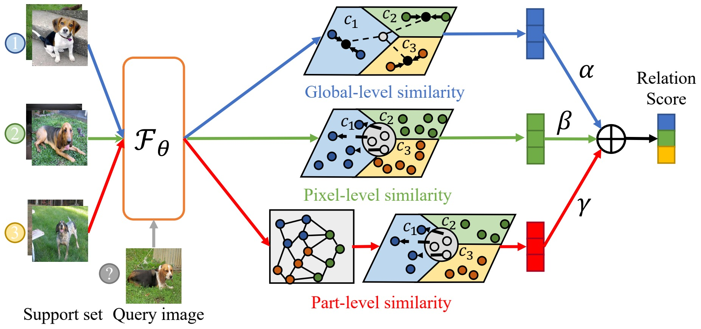

|
Haoxing Chen
(陈昊星)
|
Research Interest
I work in the field of few-shot learning, metric-learning, self-supervised learning, computer vision and machine learning. Currently, I focus on the following research topics:- Learning with Limited Data: The ability of a model to fit with limited data is essential and necessary due to the instance/label collection cost. How to extract and utilize knowledge from related tasks and domains is the key. Specifically, Haoxing mainly works on how to learn meta-knowledge for few-shot learning.
- Unsupervised Learning: How to learn a good feature representation from a large amount of unlabeled data is of great significance for solving practical problems. Specifically, Haoxing trys to discover semantic information from data with contrastive learning.
Education and Intern
- 2021.6-2021.9 AI Research Intern in Samsung R&D Institute China, Xi'an.
- 2020.9-NOW M.E. in Machine Learning and Intelligent Decision Group, Nanjing University, NJU.
- 2016.8-2020.6 B.E. in School of Instrument Science and Engineering, South East University, SEU.
Preprints
-
Haoxing Chen , Huaxiong Li, Yaohui Li, Chunlin Chen.
Multi-scale Adaptive Task Attention Network for Few-Shot Learning.
arXiv preprint arXiv:2011.14479 , 2020.
[Paper] [Code] -
Haoxing Chen , Huaxiong Li, Yaohui Li, Chunlin Chen.
Multi-level Metric Learning for Few-shot Image Recognition.
arXiv preprint arXiv: 2103.11383 , 2021.
[Paper][Code] -
Yaohui Li , Huaxiong Li, Haoxing Chen, Chunlin Chen.
Hierarchical Representation based Query-Specific Prototypical Network for Few-Shot Image Classification.
arXiv preprint arXiv: 2103.11384 , 2021.
[Paper] -
Haoxing Chen , Huaxiong Li, Yaohui Li, Chunlin Chen.
Sparse Spatial Transformers for Few-Shot Learning.
arXiv preprint arXiv: 2109.12932 , 2021.
[Paper] [Code] -
Haoxing Chen , Huaxiong Li, Yaohui Li, Chunlin Chen.
Shaping Visual Representations with Attributes for Few-Shot Learning.
arXiv preprint arXiv: 2112.06398 , 2021.
[Paper] [Code]

|
|
|  |
|

|
|

|
|

|
|
Publications
-
Yaohui Li , Huaxiong Li, Haoxing Chen, Chunlin Chen.
Local Mutual Metric Network for Few-Shot Image Classification.
In Proceedings of the 4th Chinese Conference on Pattern Recognition and Computer Vision(PRCV) , 2021.
[Paper]

|
|
Awards
- 2018, First Prize of Jiangsu Province in the National Mathematical Modelling Competition.
- 2018, Second Prize of Jiangsu Province in the 4th Virtual Instrument Competition.
- 2018, National Special Award of the 8th Education Robot Competition Of China (ERCC).
- 2019, Meritorious Prize in the Mathematical Contest In Modeling (MCM).